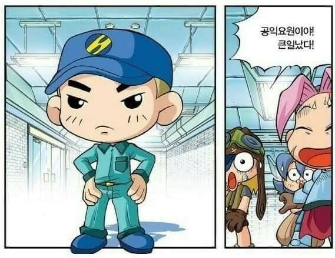

OHAYO MY NIGHT와 SUPER STARLIGHT로 유명한 씹덕 디핵쿤의 26호 병동
사실 뮤비가 있는 줄 몰랐는데 1절+랩 파트 반토막으로 이런 뮤비를 만들었을 줄이야 ㅋㅋㅋㅋ 원래 3분짜리 노랩니다
오랜만에 듣는데 여전히 좋네요
오 퇴근하면서 들어봐야겠습니다
호불호가 분명하게 갈릴 수 있는 아티스트긴 합니다
월급 루팡질 단점: 음악 못 들음. 퇴근할때 들어보겠습니다.
학생특)하라는 공부는 안 하고 노래들음
띵곡인정추
공익 장점:6시에 칼퇴하고 띵곡 듣기 가능.
킹익이다 킹익

한국 노래는 안 좋아한다고 쓰려고 했는데 노래가 아주 좋습니다? 씹덕감성 제대로 느끼네요. 알라리깡숑의 게인주의나 아마자라시의 내가 죽으려고 하는 것은을 듣는 느낌입니다
디핵은 항상 한일 콜라보로 노래 내는 느낌입니다. 일본가사도 많고 일본어 노래제목도 꽤 있구요
그나저나 한국혐오 멈춰
한국형 오타쿠 노래는 뭔가 마음에 안 듭니다. 영어팝송>일본어오타쿠노래>(넘을수없는벽)>한국형오타쿠노래입니다
방구석/논란/사대주의

 야채단님
야채단님
후원댓글 13개
댓글 13개 ▼